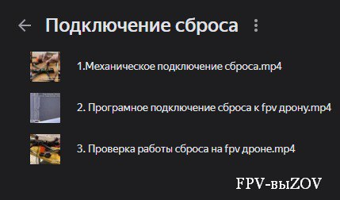
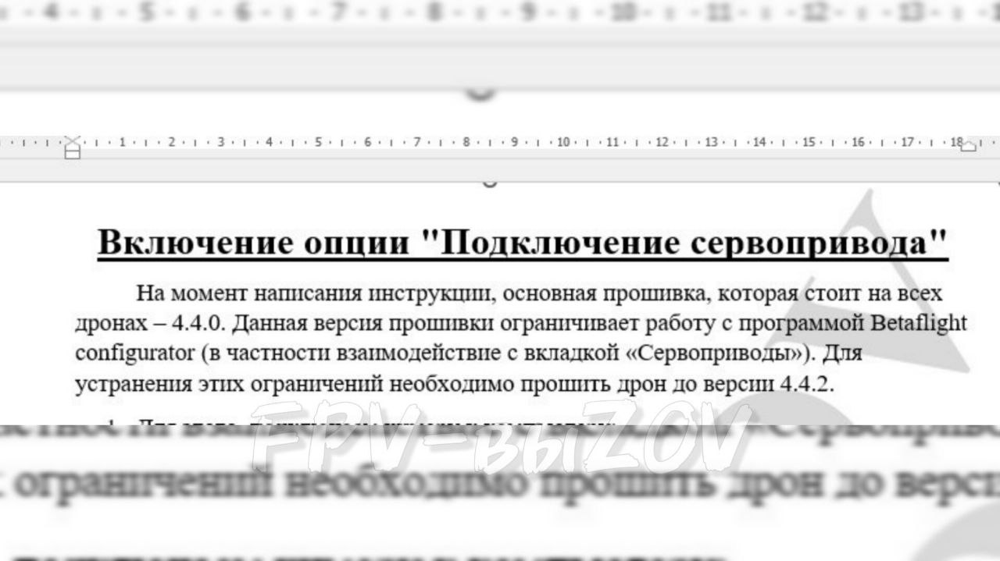

Подключение одинарного сброса на fpv-дрон.
3 видео урока ,
Непроверенная внешняя ссылка
СМОТРЕТЬ.
СМОТРЕТЬ.
📎 УРОК 1.
Непроверенная внешняя ссылка
Механическое подключение
Механическое подключение
📎 УРОК 2.
Непроверенная внешняя ссылка
Программное подключение
Программное подключение
📎 УРОК 3.
Непроверенная внешняя ссылка
Проверка на fpv-дроне
Проверка на fpv-дроне
Для подключения сброса используем 2 программы
: настройка сервопривода, настройка тумблера на пульте, перепрошивка полетного контролера
*если изначально сервоприводы не прописаны.
2. ImpulseRC_Driver_Fixer или Zadig : используем для установки драйверов полетного контролера, нужны для перепрошивки контролера
*для каждой модели полетного контролера драйвера устанавливаются один раз.
ℹ️ Программы
станавливают DFU-драйвера для полетного контроллера.
Эти драйвера позволяют перепрошивать полетный контроллер на более новую прошивку и включать поддержку сервомашин. Сервомашины, в свою очередь, нужны для работы со сбросами.
#инструкции
#Оператору_FPV_дрона
#настройка_бпла
#сбросы_на_fpv
#техник_бпла
Это вложение из поста t.me/platforma_fpv/107/1106
Инструкция по подключению сервопривода
ℹ️ Подключение сервопривода необходимо для активации процесса сброса.
✍️
#инструкции
#Оператору_FPV_дрона
#сбросы_на_fpv
#настройка_бпла
#техник_бпла
Веб-страница создана автоматически на основе поста пользователя ПЛАТФОРМА_FPV